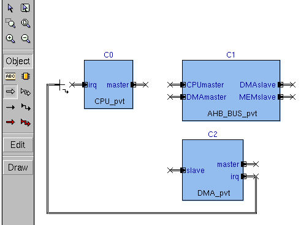

Manually Routing Channels
To manually route a channel—
- Click the appropriate icon.
- Click where you want the channel to start. To start at a pin of a component (see "Instantiated Components"), click the pin, or inside the component near the pin. If you start a new channel from a component pin, the channel automatically takes the pin's name and contents, unless there is a conflict of names with existing objects in the same diagram.
Figure 9‑11.
Manual Routing

- Move the mouse to dictate the channel direction. Click once wherever you want a corner. Double-click — or click once on a block or another channel— to terminate the channel. To end a channel at a block, click anywhere inside the block. To end on a pin of a component, click the pin, or inside the component near the pin. If you start a new channel in empty space and end it on a component pin, the channel automatically takes the pin's name and contents, unless there is a conflict of names with existing objects in the same diagram.
- If the new channel that you are drawing crosses another channel, they do not intersect unless you click the channel that you cross.
A word about style. Depending on the complexity of the block diagram that you are creating, or even on your own graphic preference, there are two different ways of achieving connectivity between different elements in a block diagram:
- You can extend complete channels from, for example, one block to another, and in this way graphically depict the source and destination of a given channel.
- As Vista makes a logical connection between two signals having an identical name, you have the option of representing channel as discontinuous lines, as long as they are assigned the same name, of course. For more information on using this second possibility, see "Discontinuous Channels".